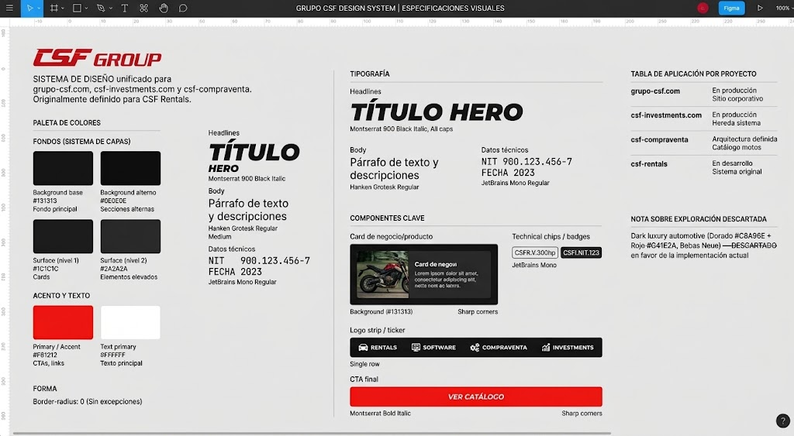
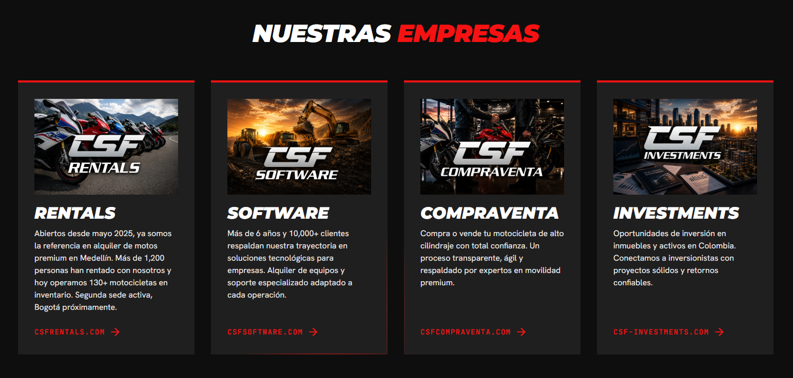

01 Overview
Grupo CSF is a Colombian holding company with 4 business units: CSF Rentals, CSF Software, CSF Compraventa, and CSF Investments. I lead brand and digital product design across all 4, working directly with David (group owner) and Juan Esteban (day-to-day contact).
02 The Problem
The group had no website at all, not for the holding company or for any of its business units. All that existed was a purchased, unused domain. There was no unified brand system either, I was only given each company's separate logo.
03 Process
I built the brand system from scratch starting only from the logos: color palette, typography (uppercase italic Montserrat for headlines, Hanken Grotesk for body text, JetBrains Mono for data), and sharp corners as a visual signature. I worked closely with David and Juan, in both in-person and virtual meetings, iterating the design through direct feedback rounds.

Brand system exploration, palette and typography
04 Solution
I designed and built Grupo CSF's corporate site: 3 pages (home, about, contact), including a habeas data compliance module (Colombian Law 1581) for handling contact information, deployed to production with its own domain.

Grupo CSF corporate site, live in production
05 Results
The holding company went from having no web presence to a solid brand identity and a production corporate site, a foundation system I later reused to speed up development of the group's other 3 business units.
3
Pages designed & shipped
4
Business units on one brand system
1581
Habeas data law compliance